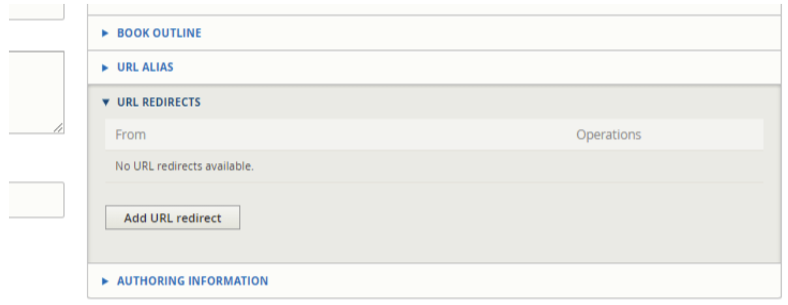

Creating redirects between pages
If you need to redirect one page to another page (for example, “Old article” to “New article”) so that users who access the old url are automatically moved to the new url.
You will need to do this for the path alias of every language you are redirecting. If a node has English, Spanish, and Polish, you will want to set redirects for each language URL.
Note
If you are only redirecting one language for a node that has multiple languages, skip step 6 as that will cause the redirect to work in all languages.
Step 1: Grab the url you need to redirect from (for example, for an English legal content, legal-information/old-article)
Step 2: Go to the edit form of the new page that you are redirecting TO
Step 3: Click the Add URL redirect in the right pane
Step 4: Fill out the add URL redirect form
Enter the path you are redirecting from. This is the legal-information/old-article for example
The To is likely already pre-populated but you likely have to edit it to trigger the autocomplete or you will get a path error on saving.
Set the redirect status. This should always be 301 Moved Permanently unless the redirect is temporary (for example, redirecting users temporarily from our donate page to a special event donate page for a time-limited appeal)
Save
Warning
If you get an error that the redirect will create a loop or is circular STOP and reach out to Gwen for help. There’s likely an existing redirect that needs to be fixed first.
Note
Steps 5 and 6 are only required IF the redirect is not working. Skip these steps if your redirect is working.
Step 5: Clean up the old path alias
There is a conflict between path aliases and redirect where the path alias will override the redirect. You need to:
Go to the old article
Navigate to the URL alias pane
Uncheck “Generate automatic URL alias”
Remove the text in the URL alias
Save the content (for legal content, you will need to add a revision log)
Step 6: Redirect the actual node.
Repeat the same steps as Step 3 and 4 only this time, the path should be node/[node-id]
Warning
This step must be done after the path alias is removed or you will likely get an infinite loop message and/or service unavailable message
Step 7: Verify that the redirect works. If it doesn’t, wait 15 minutes for cache to clear and check again. If it still isn’t working, reach out to Gwen.